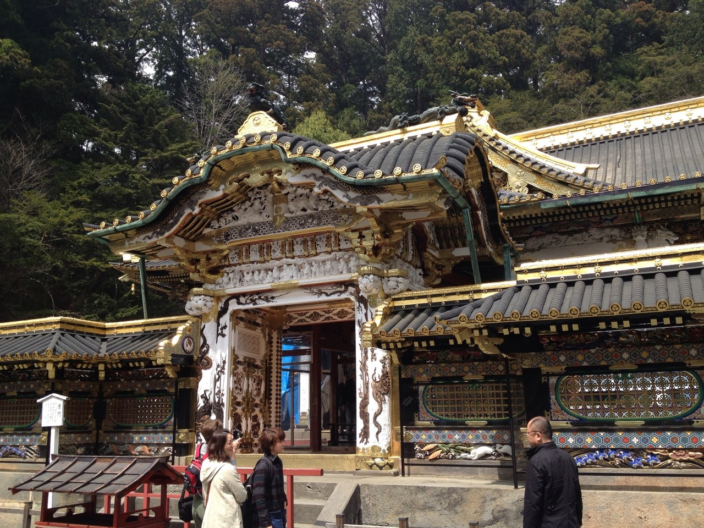
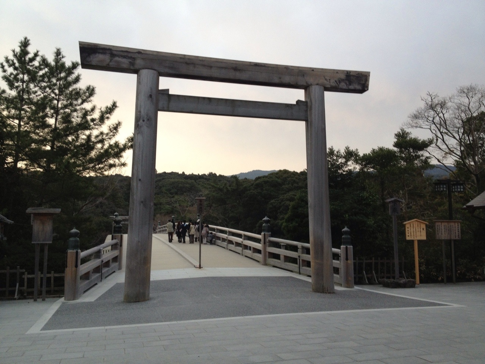
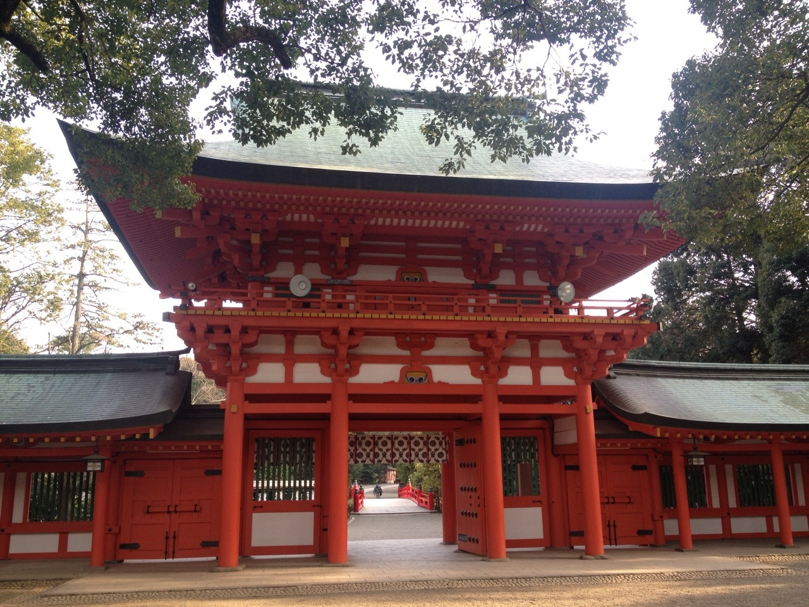
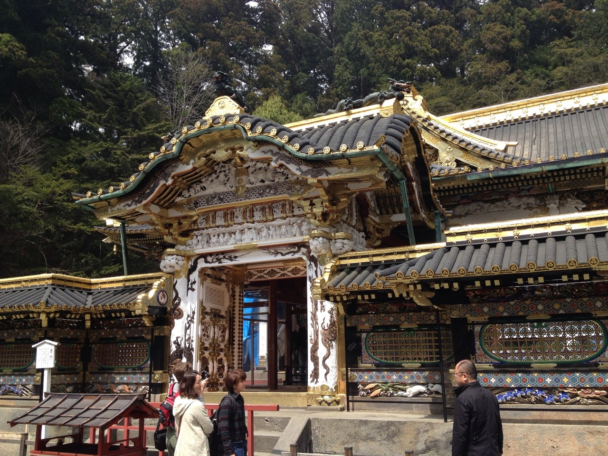
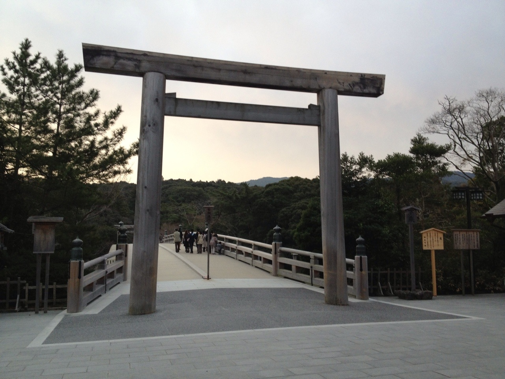
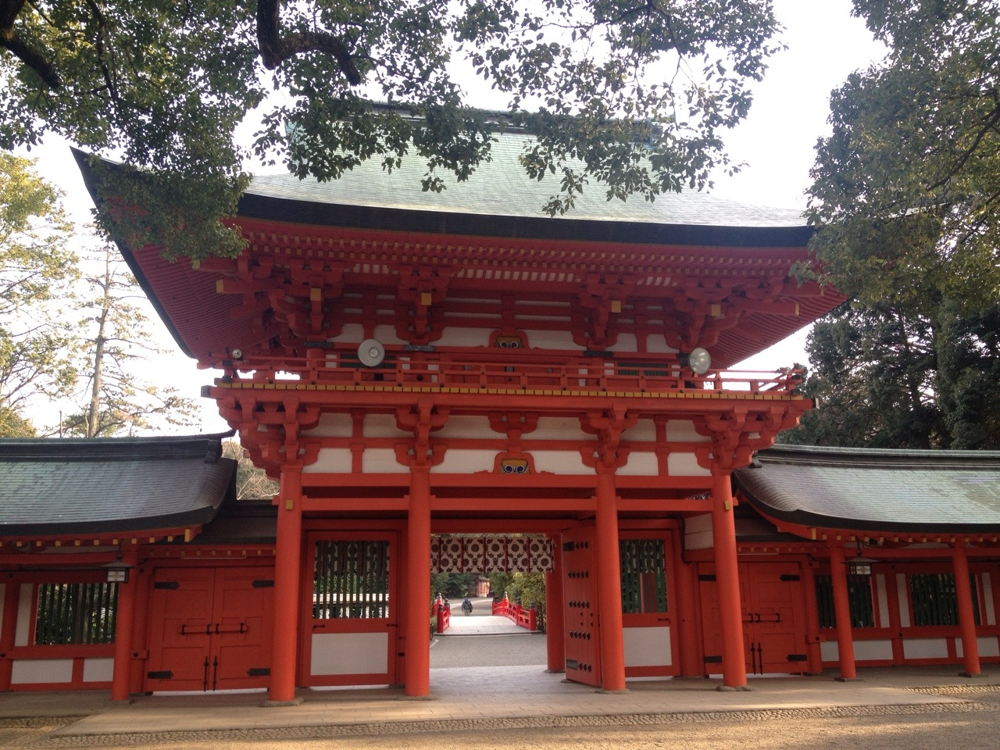

勉強部会活動内容
勉強部会では人類普遍の営みである宗教文化への理解を深めます。神社・神道は、日本の伝統文化と深く結びついており、神社や神道に関する知識を得ることで、より日本文化を豊かに楽しむことができます。勉強部会では、神社・神道の歴史や文化について勉強します。有名な神社や、神話、神々について調べたり、話したりします。神道だけではなく、仏教の知識はもちろん、必要に応じて各宗教の知識や、現代日本の宗教事情についても学びます。
前々年度は、日本神話『古事記』を読んでいました。『古事記』は神社・神道における基本的な文献です。現存最古の歴史書として知られていますが、『古事記』はさまざまな顔を持っています。『古事記』は歴史書としても読めるし、文学としても読めます。そして、神話としても読めます。神話は神話であって、教えを説く説話ではありません。世界の起源を語り、文化の起源を語るものです。
そして忘れてならないのが神道古典としての『古事記』の顔です。『古事記』以前に神話がどうであったかとは別に、『古事記』以後、神話が神道の歴史にどのように影響を与えてきたのかという観点です。『古事記』と神社、祭神、祭祀、芸能、思想、歴史などの神社文化がどのように関連しているのかを探求します。
雅楽部会とは
勉強部会とは
 




